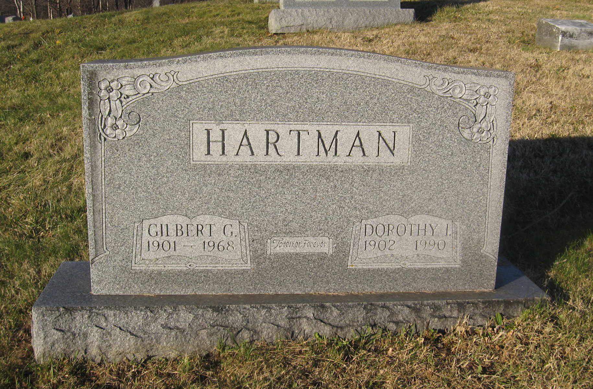
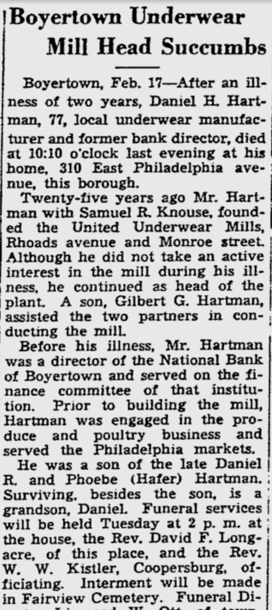
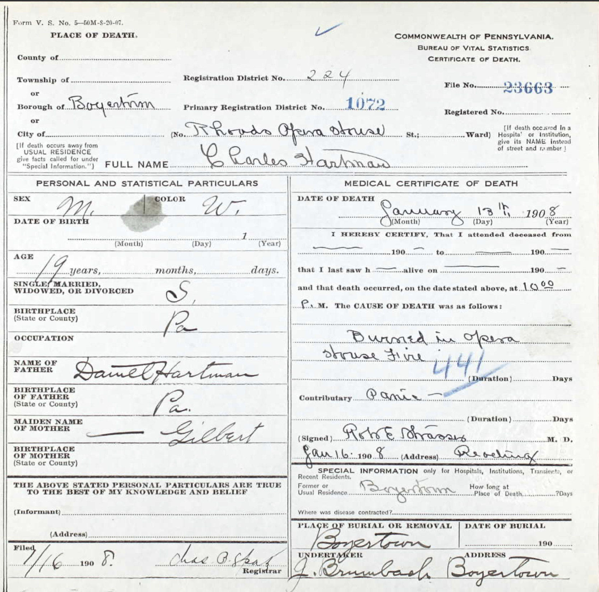
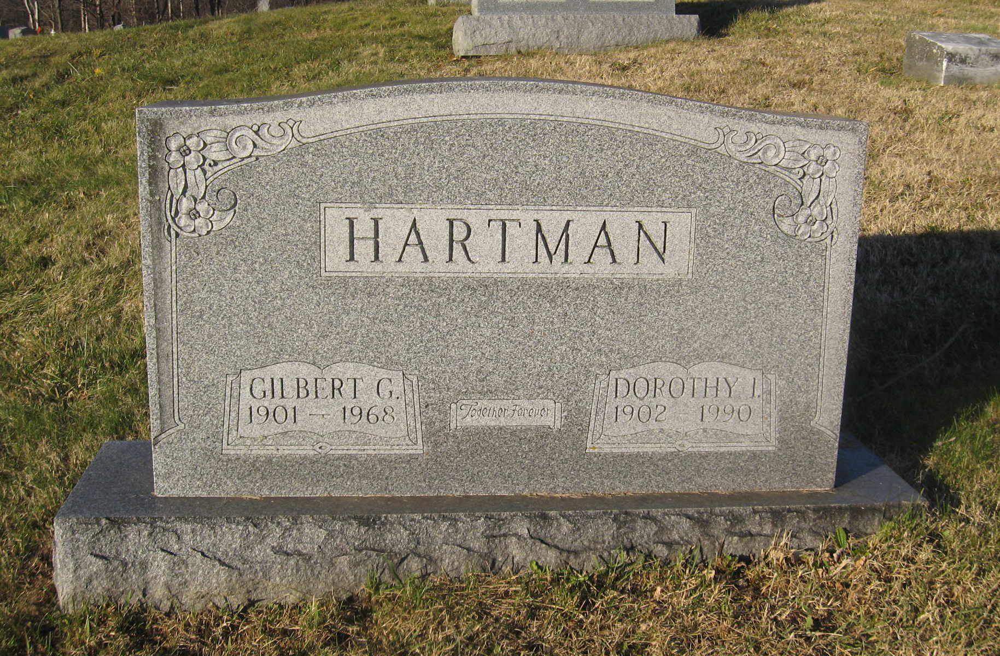
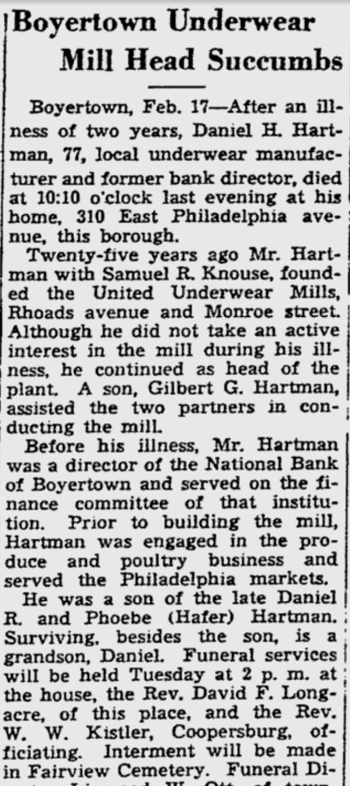
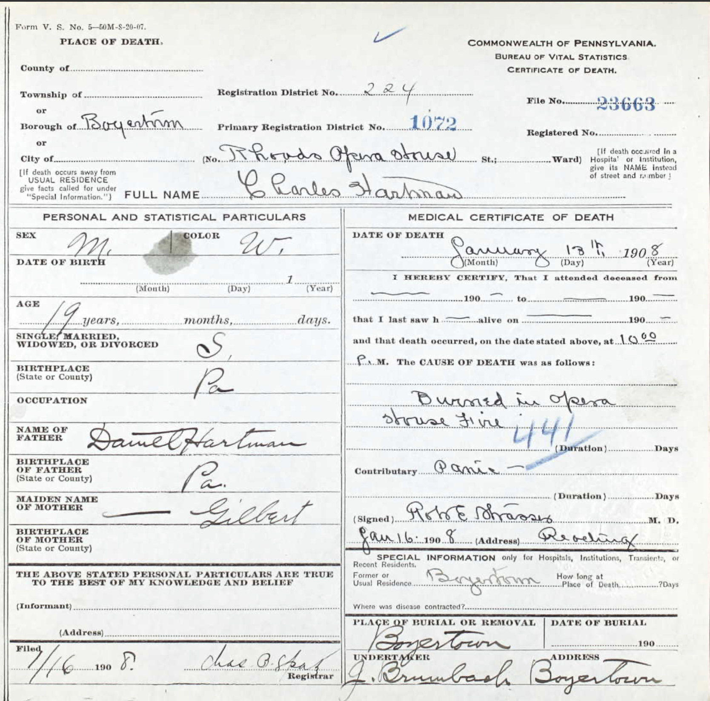

Daniel H. HARTMAN was a grand-uncle of Titus HARTMAN. He is buried together with his wife Ida and their sons Warren and Charles at Fairview Cemetery in Boyertown, PA.
Their son Gilbert is also buried at Fairview Cemetery together with his wife Dorothy (née BENNER).
Charles perished in the Rhoads Opera House fire in Boyertown, PA on January 13, 1908 at age 18, together with his teenaged cousins Verna HARTMAN (daughter of William Hafer HARTMAN) and Carrie L. HARTMAN (daughter of Franklin H. HARTMAN).
 




